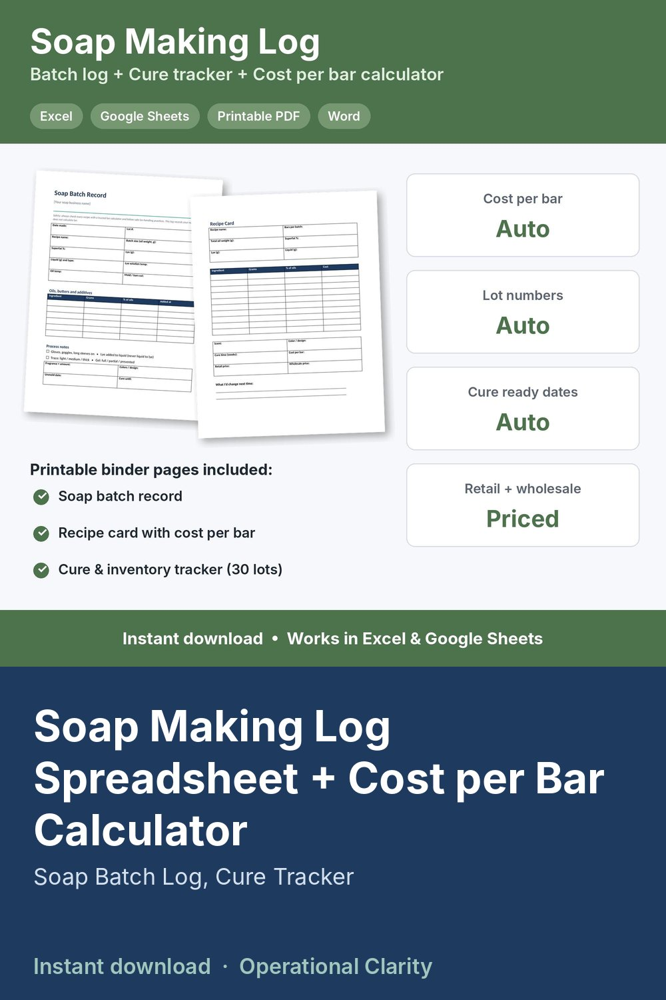

Soap Making Log Spreadsheet + Cost per Bar Calculator

SOAP MAKING LOG + COST PER BAR CALCULATOR | Soap Batch Log Spreadsheet with Cure Tracker, Recipe Cost, Retail & Wholesale Pricing + Printable Batch Record | Excel & Google Sheets | Instant Download
Keep every batch organized and know exactly what each bar costs you. A spreadsheet that does the math, plus printable binder pages for your soap room.
WHAT IT DOES
• Ingredients: enter what you pay and the package size once. Cost per gram calculates for every oil, butter, lye, liquid, fragrance, colorant and additive.
• Recipes: list each recipe in grams. Batch weight, batch cost and ingredient cost per bar calculate automatically.
• Batch log: automatic lot numbers, ready dates from your cure time, and a status that switches from Curing (amber) to Ready (green) on its own. Also records superfat, lye and liquid amounts, temperature, bars sold, bars left, a 1-5 rating and notes.
• Pricing: true cost per bar (ingredients + packaging + your time + overhead), suggested retail price, profit per bar, wholesale price and wholesale profit. Red warns you if wholesale drops below cost.
• Dashboard: bars curing, bars ready to sell, next batch ready date, and stock and retail value by recipe
• BONUS printables (Word + PDF): soap batch record, recipe card and a cure & inventory tracker for 30 lots
WHAT YOU GET
• Soap Making Log & Cost Calculator (.xlsx) for Excel or Google Sheets
• Printable Soap Log Pages (Word + PDF, 3 pages)
• Start Here guide (PDF)
Example recipes are included so you can see how it works. Replace them with your own.
SAFETY
This log does not calculate lye. Always run every recipe through a trusted lye calculator and follow safe lye-handling practices. The log records the numbers you use.
GOOD TO KNOW
• Digital download. No physical item will be shipped.
• For use in your own business. No reselling or sharing of the files.